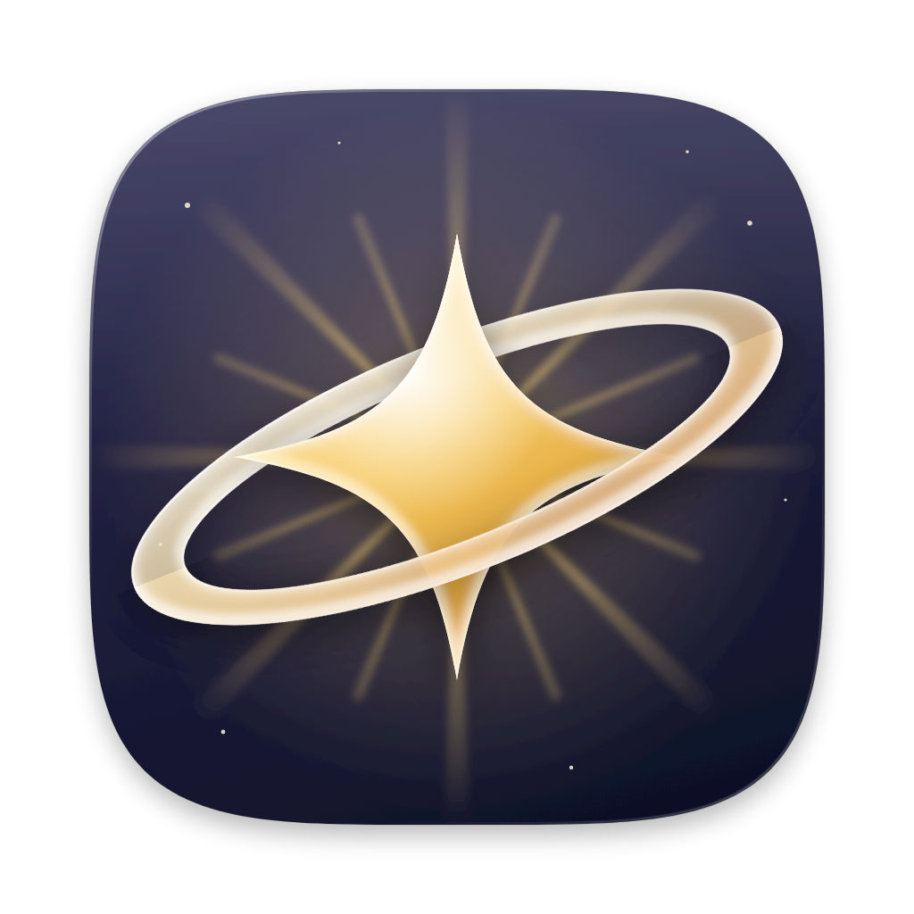

<title>Starlight Icon Mockups</title>
<meta name="claude:viewport-fit-sides" content="cover">
<link rel="preconnect" href="https://fonts.googleapis.com">
<link rel="stylesheet" href="https://fonts.googleapis.com/css2?family=Fraunces:opsz,wght@9..144,500;9..144,600&family=Figtree:wght@400;500;600&family=JetBrains+Mono:wght@400&display=swap">
<style>
  /* Layout: a dock strip comparing all five at real size, then one row per concept (large render + size ladder on light/dark desktops). */
  :root {
    --bg: #F5F1EA;
    --panel: #FFFDF9;
    --fg: #2A2419;
    --muted: #776C5B;
    --line: #E4DCCD;
    --gold: #B9831F;
    --wall-light: linear-gradient(135deg, #E9E4DA, #D5CCBC);
    --wall-dark: linear-gradient(135deg, #2B2A36, #15151D);
    --dock: rgba(255, 255, 255, .42);
    --font-display: "Fraunces", Georgia, serif;
    --font-body: "Figtree", system-ui, -apple-system, sans-serif;
    --font-mono: "JetBrains Mono", ui-monospace, Menlo, monospace;
  }
  @media (prefers-color-scheme: dark) {
    :root:not([data-theme="light"]) {
      --bg: #17150F; --panel: #211E17; --fg: #F2EBDD; --muted: #A99E8A; --line: #3A3428; --gold: #E9B85A;
      --dock: rgba(255, 255, 255, .16); color-scheme: dark;
    }
  }
  :root[data-theme="dark"] {
    --bg: #17150F; --panel: #211E17; --fg: #F2EBDD; --muted: #A99E8A; --line: #3A3428; --gold: #E9B85A;
    --dock: rgba(255, 255, 255, .16); color-scheme: dark;
  }
  body {
    background: var(--bg); color: var(--fg); font-family: var(--font-body); font-size: 15px; line-height: 1.55;
    padding-left: max(16px, env(safe-area-inset-left, 0px)); padding-right: max(16px, env(safe-area-inset-right, 0px));
    padding-block: 40px 64px;
  }
  main { max-width: 1080px; margin: 0 auto; display: flex; flex-direction: column; gap: 40px; }
  header { display: flex; flex-direction: column; gap: 8px; max-width: 62ch; }
  .eyebrow { font-family: var(--font-mono); font-size: 12px; letter-spacing: .08em; text-transform: uppercase; color: var(--gold); }
  h1 { font-family: var(--font-display); font-weight: 600; font-size: clamp(32px, 5vw, 48px); line-height: 1.05; margin: 0; text-wrap: balance; }
  h2 { font-family: var(--font-display); font-weight: 500; font-size: 28px; margin: 0; }
  p { margin: 0; color: var(--muted); }

  .dock-wrap {
    background: var(--wall-light); border-radius: 18px; padding: 56px 16px 20px; display: flex; justify-content: center;
    overflow-x: auto;
  }
  .dock-wrap.dark { background: var(--wall-dark); }
  .dock {
    display: flex; gap: 14px; padding: 10px 14px; border-radius: 26px; background: var(--dock);
    backdrop-filter: blur(20px); -webkit-backdrop-filter: blur(20px);
    border: 1px solid rgba(255, 255, 255, .45); box-shadow: 0 10px 30px rgba(0, 0, 0, .12);
  }
  .dock figure { margin: 0; display: flex; flex-direction: column; align-items: center; gap: 6px; }
  .dock img { width: 72px; height: 72px; }
  .dock figcaption { font-size: 11px; font-family: var(--font-mono); color: #5b5245; }
  .dock-wrap.dark .dock figcaption { color: #cfc6b6; }
  .docks { display: grid; gap: 12px; }

  .concept {
    display: grid; grid-template-columns: minmax(0, 360px) minmax(0, 1fr); gap: 32px; align-items: center;
    background: var(--panel); border: 1px solid var(--line); border-radius: 20px; padding: 28px;
  }
  .concept > img { width: 100%; aspect-ratio: 1; max-width: 100%; }
  .info { display: flex; flex-direction: column; gap: 14px; min-width: 0; }
  .title-row { display: flex; align-items: baseline; gap: 12px; flex-wrap: wrap; }
  .tag { font-family: var(--font-mono); font-size: 12px; color: var(--gold); }
  .ladders { display: grid; grid-template-columns: 1fr 1fr; gap: 10px; }
  .ladder { border-radius: 12px; padding: 14px; display: flex; align-items: flex-end; gap: 14px; background: var(--wall-light); }
  .ladder.dark { background: var(--wall-dark); }
  .ladder img:nth-child(1) { width: 64px; } .ladder img:nth-child(2) { width: 32px; } .ladder img:nth-child(3) { width: 16px; }
  .sizes { font-family: var(--font-mono); font-size: 12px; color: var(--muted); }
  ul.notes { margin: 0; padding-left: 18px; color: var(--muted); display: grid; gap: 4px; }

  @media (max-width: 720px) {
    .concept { grid-template-columns: 1fr; padding: 20px; gap: 20px; }
    .concept > img { max-width: 320px; margin: 0 auto; }
    .ladders { grid-template-columns: 1fr; }
  }
</style>

<main>
  <header>
    <span class="eyebrow">Starlight · macOS app icon</span>
    <h1>Five directions for the Starlight icon</h1>
    <p>Each mockup sits on Apple's 1024 × 1024 icon grid: an 824 pt squircle with continuous corners and the standard drop shadow. Every one uses cream and gold, a star that throws light, and translucent glass layers in the style of the current macOS icons.</p>
  </header>

  <section class="docks" aria-label="Dock comparison">
    <div class="dock-wrap"><div class="dock">
      <figure><figcaption>Radiance</figcaption></figure>
      <figure><figcaption>Twin Stars</figcaption></figure>
      <figure><figcaption>Orbit</figcaption></figure>
      <figure><figcaption>Flare</figcaption></figure>
      <figure><figcaption>Layers</figcaption></figure>
    </div></div>
    <div class="dock-wrap dark"><div class="dock">
      <figure><figcaption>Radiance</figcaption></figure>
      <figure><figcaption>Twin Stars</figcaption></figure>
      <figure><figcaption>Orbit</figcaption></figure>
      <figure><figcaption>Flare</figcaption></figure>
      <figure><figcaption>Layers</figcaption></figure>
    </div></div>
  </section>

  <article class="concept" id="radiance">
    
    <div class="info">
      <div class="title-row"><h2>Radiance</h2><span class="tag">5-point · cream</span></div>
      <p>A plump golden glass star sits on a larger frosted star, with a burst of fine rays fanning out behind both. The frosted star blurs the rays behind it.</p>
      <ul class="notes"><li>The most classic "star" reading; clear at every size.</li><li>The two stars are offset by 36°, so their points interleave.</li></ul>
      <div class="ladders">
        <div class="ladder"></div>
        <div class="ladder dark"></div>
      </div>
      <span class="sizes">64 · 32 · 16 pt</span>
    </div>
  </article>

  <article class="concept" id="twin">
    
    <div class="info">
      <div class="title-row"><h2>Twin Stars</h2><span class="tag">4-point · honey</span></div>
      <p>Modeled on the Screen Sharing icon's overlapping windows. A solid gold sparkle glows at the back, and a frosted glass sparkle overlaps it at the front. The gold shows through the glass, blurred.</p>
      <ul class="notes"><li>The overlap hints at two machines, which suits a streaming client.</li><li>The most "liquid glass" of the set.</li></ul>
      <div class="ladders">
        <div class="ladder"></div>
        <div class="ladder dark"></div>
      </div>
      <span class="sizes">64 · 32 · 16 pt</span>
    </div>
  </article>

  <article class="concept" id="orbit">
    
    <div class="info">
      <div class="title-row"><h2>Orbit</h2><span class="tag">4-point · midnight</span></div>
      <p>A gold glass sparkle on a midnight sky, circled by a translucent golden ring. The back half of the ring passes behind the star and the front half crosses over it, so the star shows through the glass.</p>
      <ul class="notes"><li>The only dark option. It stands out most in a cream-heavy Dock.</li><li>The background can switch to cream if you like the ring but not the night sky.</li></ul>
      <div class="ladders">
        <div class="ladder"></div>
        <div class="ladder dark"></div>
      </div>
      <span class="sizes">64 · 32 · 16 pt</span>
    </div>
  </article>

  <article class="concept" id="flare">
    
    <div class="info">
      <div class="title-row"><h2>Flare</h2><span class="tag">4-point · ivory</span></div>
      <p>A tall, slender sparkle with a bright core and a horizontal lens-flare streak, plus two small companion sparkles. Overlapping glass discs, like lens bokeh, catch the light behind it.</p>
      <ul class="notes"><li>The lightest and most airy option.</li><li>The thin arms get delicate at 16 pt.</li></ul>
      <div class="ladders">
        <div class="ladder"></div>
        <div class="ladder dark"></div>
      </div>
      <span class="sizes">64 · 32 · 16 pt</span>
    </div>
  </article>

  <article class="concept" id="layers">
    
    <div class="info">
      <div class="title-row"><h2>Layers</h2><span class="tag">5-point · amber</span></div>
      <p>Three translucent stars stacked in depth, from deep amber at the back to clear glass at the front, over a burst of light coming from behind the stack.</p>
      <ul class="notes"><li>Closest to the macOS Tahoe layered-glass look.</li><li>The warmest, most saturated background of the set.</li></ul>
      <div class="ladders">
        <div class="ladder"></div>
        <div class="ladder dark"></div>
      </div>
      <span class="sizes">64 · 32 · 16 pt</span>
    </div>
  </article>
</main>
